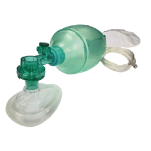
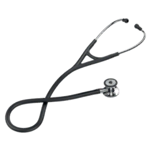

Thinking and performance
Reported problems include reduced concentration, memory difficulty and slower reactions.
How the game estimates pressure exposure, applies related injuries and models delayed blast lung deterioration.
One exposure, several effects
With blast overpressure enabled, the mod calculates one exposure from the explosive, distance, cover, body orientation and enclosure. Hearing effects, disorientation, knockdown, head injury and blast lung read that shared result. Arma and ACE can also produce fragment wounds and other damage from the same explosion.
In gameWhat the pressure model represents
This is an approximate pressure model. Nearby surfaces modify the result through a few geometry checks; the game does not trace a moving wave through every doorway, corridor or reflected path. The model records estimated pressure and impulse, while the injury gates below primarily use effective peak pressure and its normalized dose.
| Factor | Implemented effect |
|---|---|
Explosive size | Uses an ammunition specific TNT override when available, otherwise estimates charge from indirectHit × 0.005 kg. Unknown charge defaults to 0.18 kg |
Distance | Uses detonation to patient distance, with a 0.5 m minimum to bound the calculation. Larger distance sharply lowers pressure |
Cover | Blocked line of sight multiplies pressure by 0.55 by default. A wall reduces the calculated exposure but does not make it zero |
Orientation | Side on exposure can reduce pressure to 0.85 times the face on or rear facing value |
Enclosure | Checks for a roof and nearby walls, then blends reflected pressure into the result. More enclosure increases effective pressure; vehicle interiors are treated as enclosed when the enclosure branch applies |
Missing detonation data | Falls back to an engine damage estimate. Without enough data to estimate distance, it uses bounded engine damage as a dose proxy |
Repeat exposure | Stores up to 20 events. Cumulative exposure decays with a default one hour half-life and increases later blast TBI severity |
These are implementation thresholds, not real world injury probabilities. A patient can have more than one effect.
| Calculated exposure | Game consequence |
|---|---|
Dose above 0.05 | Brief disorientation and camera shake |
35 kPa or higher | Hearing effect; blast exposure added to the activity log |
Dose above 0.08 | Additional pain |
Dose at least 0.10, about 55 kPa | Can seed the separate TBI system when that system is enabled |
Dose above 0.18, about 99 kPa | Can knock down an eligible patient outside a vehicle |
100 kPa or higher | Records tympanic injury |
200 kPa or higher | Seeds blast lung when enabled |
Dose at least 0.45, about 247.5 kPa | Requests medical unconsciousness |
550 kPa | Reference used to normalize dose to 1.0; this function does not perform a 50% death roll |
Ear protection does not disable the brain, lung or whole body injury branches. A hearing finding is not required for the other branches to run.
Repeated low level blast is relevant to breachers, heavy weapons crews and instructors, even when no single exposure produces an obvious concussion. The concern often called breacher’s syndrome or breacher’s brain is the possible cumulative neurological effect of those exposures.
Reported problems include reduced concentration, memory difficulty and slower reactions.
Headache, irritability, hearing difficulty and tinnitus can occur. A visible wound is not required for a person to report symptoms.
Low level blast exposure does not automatically establish concussion or TBI. Exposure history and symptoms need assessment together.
Human exposure background: Military Health System, low level blast exposure.
A study of Canadian breaching instructors and range staff found an association with more post-concussive symptoms and lower energy. It also found overlapping effects of concussion and deployment history. Because the study was cross-sectional, it could not isolate blast as the cause of every symptom or establish a universal exposure threshold. Vartanian and colleagues, 2020.
In gameHow repeated exposure affects the game
The game tracks a short exposure history and a cumulative dose. It then uses that cumulative dose to increase the severity assigned to a later qualifying blast. There is no separate breacher’s syndrome diagnosis, chronic cognitive test or specific treatment action in the reviewed blast/TBI paths.
| Situation | Game interpretation |
|---|---|
Several small exposures | Can build cumulative exposure. Subthreshold blasts do not individually enter the blast TBI branch solely because the total is high |
A later qualifying blast | Earlier cumulative dose multiplies the new severity by a default factor of 1 + previous dose × 0.35, capped at severity 1 |
TBI already present | Structural severity retains the greater of the previous structural injury and the incoming severity. If the incoming severity exceeds the current acute burden, acute severity rises to that value and ICP increases by 5 mmHg, subject to the configured cap. A repeat blast can therefore reactivate a recovered injury without exceeding its historical severity |
No visible wounds or little ear injury | Does not rule out the separate brain or lung branches. Assess mental state, pupils, breathing and subsequent deterioration |
After repeated blasts, reduce further exposure and reassess the casualty instead of judging only the newest wounds. Use the head injury reference and delayed blast lung section for the systems the game actually applies.
TBI update checked at ACM Extended dev revision 98d18bb: repeat blast, structural history and renewed acute injury · recovery and retained vulnerability.
Repeat exposure behavior checked at ACM Extended 21f8694: cumulative dose and history · new exposure gate and severity multiplier. The one hour decay and numerical thresholds are gameplay parameters and do not define a safe real world exposure or recovery interval.

Blast lung reduces gas exchange as its effect ramps in over a default 150 seconds. The injury can therefore become more apparent after the initial explosion. Increasing severity also changes lung mechanics and can make ventilation less effective.
Reassess breathing, SpO2, delivered minute ventilation, airway pressure and perfusion after a blast. A chest seal or decompression may treat a separate chest injury, but neither clears the blast lung state.
| Support | Default effect on blast lung severity |
|---|---|
Effective mechanical ventilation | Strongest recovery when delivered minute ventilation adequacy is above 0.6, FiO2 is at least 50%, and the pressure state is below danger. Mode alone does not decide success |
Dangerous airway pressure while ventilating | Worsens severity at three times the base worsening rate |
Active BVM with connected oxygen | Slower recovery than effective mechanical ventilation |
Active BVM without oxygen | Slow worsening |
Passive supplemental oxygen | Improves mild severity below 0.30; holds severity from 0.30 to below 0.45 |
No effective support | Mild injury below 0.30 holds steady in the current code; moderate or worse injury progresses |

Severity at or above 0.85 for 60 continuous seconds triggers ARDS. Once this state is established, recovery runs at 35% of the normal rate and deterioration is multiplied by 1.5. Severity cannot recover below 0.35 through ordinary blast lung treatment.
Continue effective oxygenation and ventilation, monitor pressure and perfusion, and evacuate for definitive care. The persistent ARDS floor is another reason the wiki must not describe herniation as the only lasting injury.
See Ventilator Settings & Tips, oxygen delivery and head injury for connected systems.
Game mechanics checked against ACM Extended source 4848f63. Thresholds and timing are game defaults and can change with mission settings. Pressure calculation · Injury thresholds · Treatment and ARDS · Timing defaults